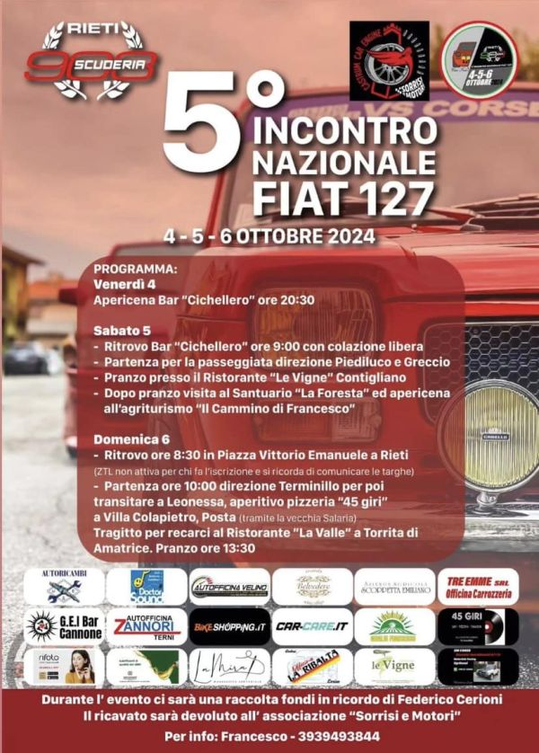

5° incontro nazionale Fiat 127 e derivate Rieti 2024
19 Ottobre 2024
Dal 4 al 6 ottobre 2024 il nostro gruppo ha partecipato al 5° incontro nazionale Fiat 127, organizzato dalla Scuderia 903 di Rieti.
3 giorni all'insegna dell'amicizia, uniti dalla passione per la Fiat 127.

Hanno partecipato all'incontro
- Alberto (Fiat 127 special prima serie)
- Antonio (Fiat 127 unificata)
- Emanuele (Fiat 127 special prima serie)
- Gaetano da Caltanissetta! (Fiat 127 Scioneri prima serie)
- Giovanni (Fiat 127 special prima serie)
- Massimo (Fiat 127 Top)
- Miro (Fiat 128 Sport)
- Pietro (Fiat 127 sport)
Venerdì 4 ottobre 2024
Incontro di tutti i partecipanti con serata apericena presso il Bar "Cicchellero".


Di seguito tutte le foto della prima giornata:
Sabato 5 ottobre 2024
Alle ore 9 appuntamento presso il il Bar "Cicchellero" con colazione.


Tutti in marcia direzione Piediluco, passaggio sul corso e sosta con vista lago.


Direzione Greccio e pranzo presso il Ritorante "Le Vigne" a Contigliano


Il pomeriggio visita guidata al Santuario di Santa Maria della Foresta, Rieti.


La serata si è conclusa con l'apericena presso l'agriturismo "Il Cammino di Francesco"
Di seguito tutte le foto della seconda giornata:
Domenica 6 ottobre 2024
Ore 8,30 ritrovo in Piazza Vittorio Emanuele II a Rieti.


Dalle ore 10 tutte le Fiat 127 hanno inziato un emozionante tragitto direzione Terminillo fino a quota 1895 metri!


Video del percorso, si ringrazia per il video il Sovrintendente capo Renzo Gunnella della Polizia Locale di Rieti
Transito presso la cittadina di Leonessa, aperitivo presso pizzeria "45 giri" a Villa Colapietro, Posta (tramite la vecchia Salaria).


La giornata si è conclusa con il pranzo presso il Ristorante "La Valle" a Torrita di Amatrice

Di seguito il video che racchiude i momenti del 5o incontro nazionale Fiat 127, da segnalare il ricordo in memoria di Federico Cerioni con una donazione per l'associazione "Sorrisi e Motori".
Chiudiamo l'articolo con la foto di gruppo con Giacomo Manzoni (nella foto seduto al centro), figlio di Pio Manzù, designer della Fiat 127.
Giacomo ha costituito, in onore a suo padre, il Fiat 127 CLUB che ha avuto anche il riconoscimento ufficiale da parte di Stellantis Heritage. Ci auguriamo di collaborare con lui per la crescita di questo Club, partecipando e magari organizzando raduni.

Di seguito tutte le foto della terza giornata:
Altri incontri
Vuoi contattarci?
Se possiedi una Fiat 127 e sei della Campania, sei il benvenuto!
Vieni a conoscerci ad un nostro incontro!

© 2022 - i Ragazzi del 127